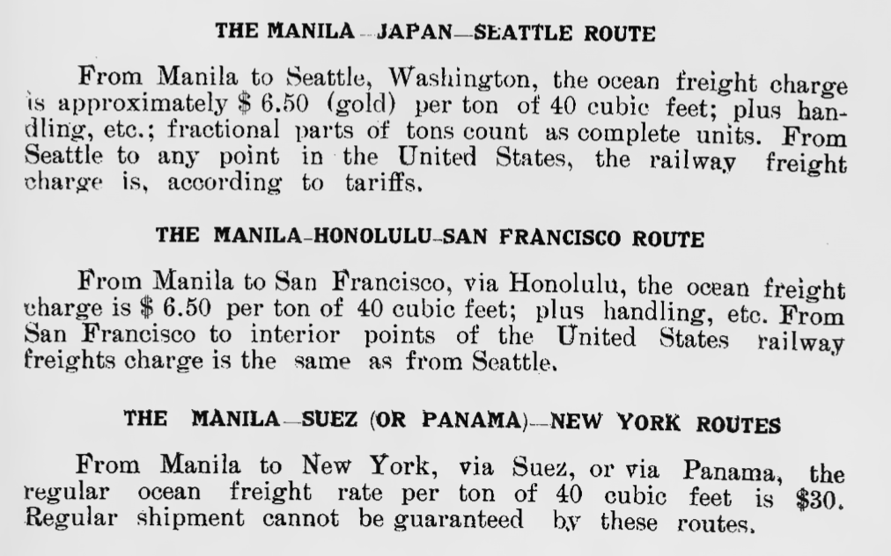
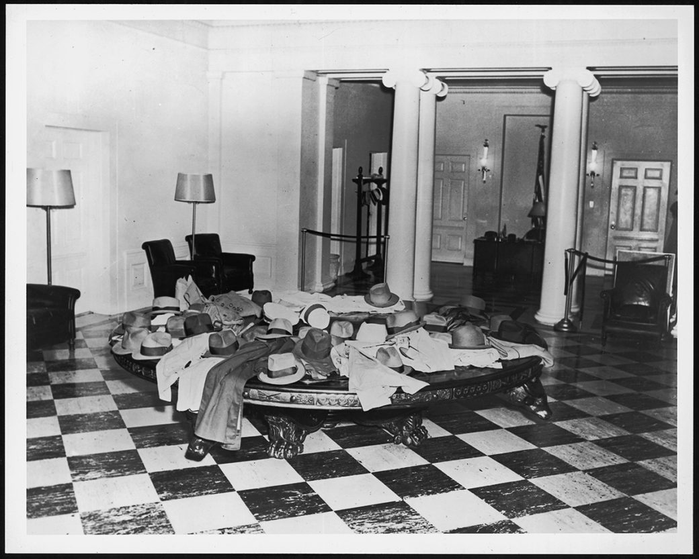
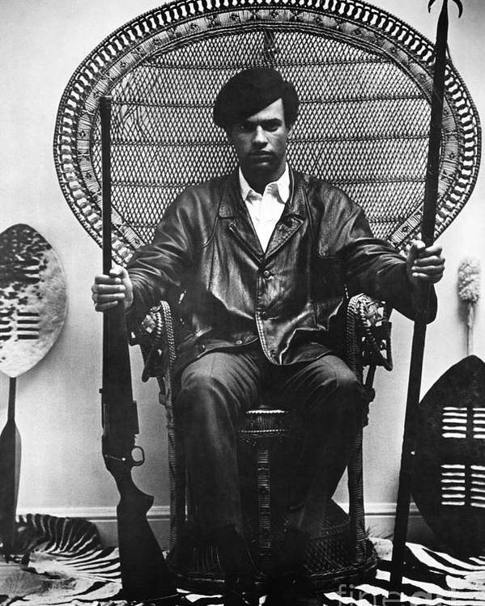
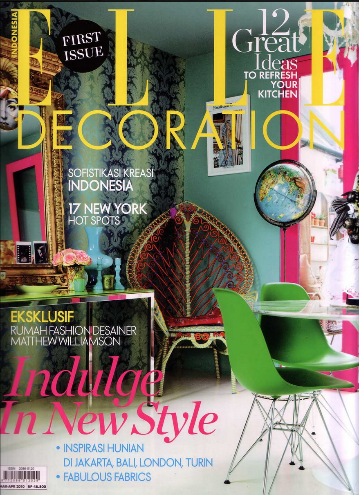
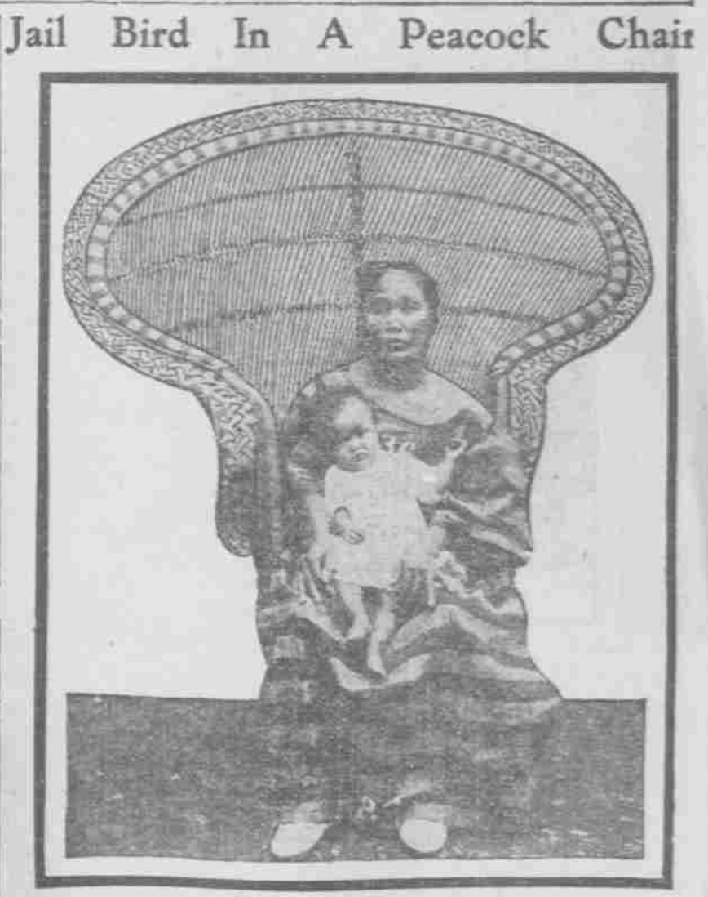
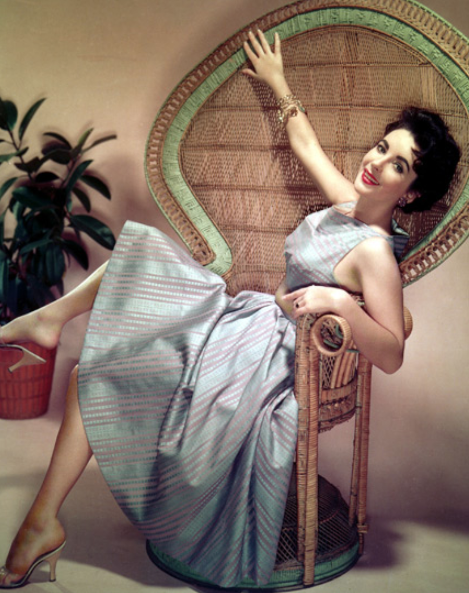
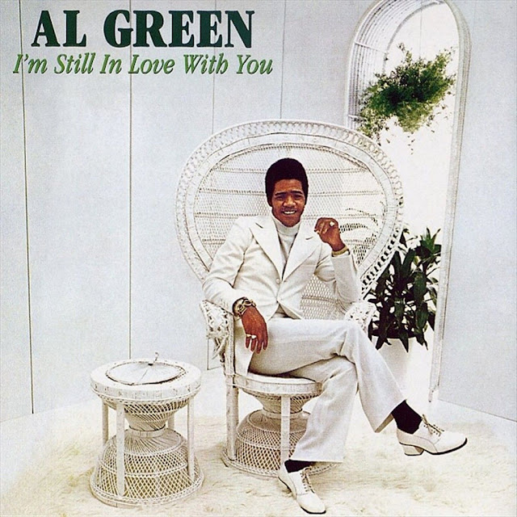
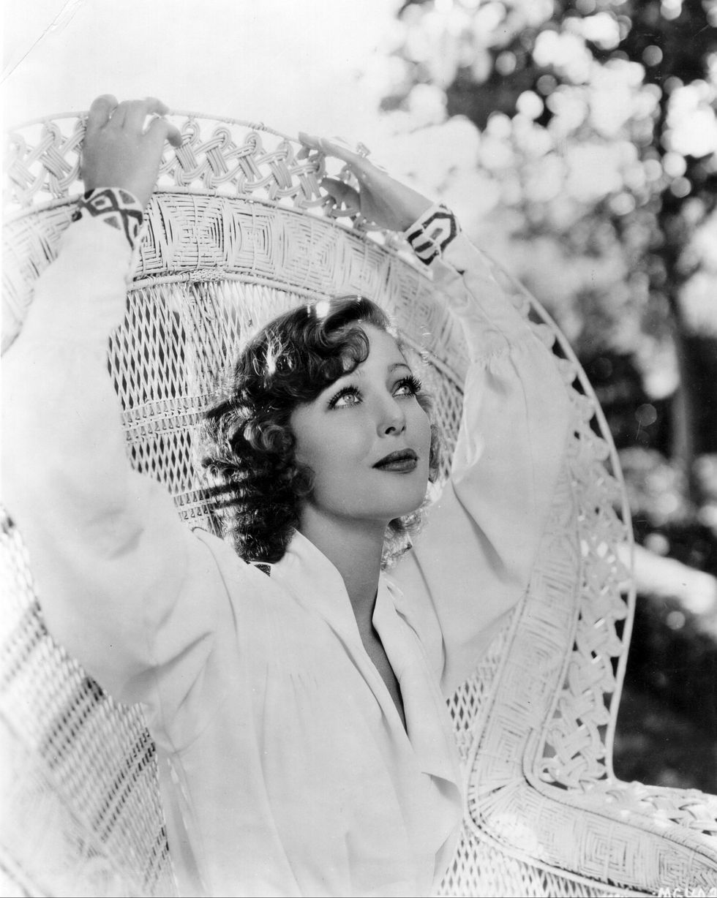
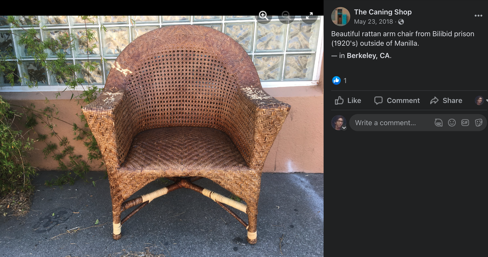
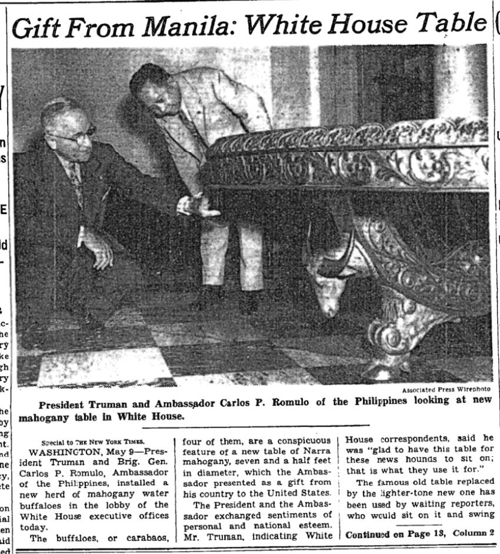

Sales
In 1916, a Vogue feature entitled “A Shopping Tour in the Far East” took readers with a group of shoppers on a journey across the “Orient,” through Egypt and Turkey, India, China, and Japan, ending in the Philippines. The article is steeped in the racializing discourse of the time, detailing how “all the clever wiles” that the party “learned from the Turk and the Hindu availed [them] nothing in the presence of the Chinaman” and “found the oriental adapting himself rapidly to the desires and needs of the occidental” in China; and commoditizing all sorts of curios from the natural landscapes they traversed, including a “zoological collection” of tropical birds, furs and silks, and even elephant tusks: “no sane American would go forth in his native city in pursuit of elephants, yet in Ceylon he will insist upon buying whole families of them, made of ebony, ivory, silver, and cocoanut shell [sic]...” The group’s final stop is in Manila, where they are “advised to do [their] shopping at Bilibid Prison,” where they “saw the excellent work of the native prisoners, who are natural hand-craft workers” and bought “silver souvenirs, hammocks, canes, and wicker chairs.” The short passage ends at sunset with the group watching “the prisoners salute the flag,” giving them pride in “our colonial policy.”
Shopping and pride thus went hand in hand, as the American colonial policy had created the conditions necessary for a fully functioning designer furniture factory and sales floor. Indeed, by at least 1912, there were enough forest products, processing infrastructure, incarcerated craftsmen, and internationally-facing bureaucrat capitalists to invite visitors and even take special orders for “all classes of cabinetwork, including wood carving, making furniture of special design, or refinishing old furniture.” They even made furniture for “firms or Government offices and schools,” including typewriter tables, desks, office tables, file cases, shelves, and other furniture.
By 1924, the sales rooms at Bilibid had regular hours (8 am–12 pm, 2–5 pm daily, except Sundays and holidays), and the Catalogue detailed all the information required for shoppers to place orders and receive them efficiently. The information on crating and transportation is comprehensive and clear, detailing how the Bureau claims no liability for delivery of goods at destination, assure buyers that all crates are “strongly crated at a moderate charge,” and that while wicker furniture may be shipped short distances without crating, hardwood furniture should always be crated or boxed. Shipping was carefully calculated and planned, and several international routes were clarified:

The American project had indeed constructed and enabled thoroughly efficient infrastructures of transport and communication, supplanting the growth of the Bilibid Workshop’s ability and popularity. The workshop even claimed that a “very considerable portion” of their business consisted of special orders, as the hardwood furniture department was equipped “to execute special work in their lines,” and were serious furniture designers insisting upon “explicit, detailed information relative to special orders, preferably by sketch and full details as to dimensions, color, and materials.” Rattan furniture could also be ordered in black and white for a 10% charge.
Some of these special orders were indeed quite important; two separate narra hardwood tables have occupied the West Wing’s lobby, first as a gift from then-president Emilio Aguinaldo to then-President Franklin Delano Roosevelt in 1935, and then as a replacement from then-Ambassador Carlos P. Romulo to then-President Harry S. Truman in 1952. These gifts represented the growing Philippine capabilities for the valorization of land and labor, deploying the tactics of governance—namely, incarceration—toward fiscal ends and as symbols of loyalty, control, and productivity.
As both wicker and hardwood furniture traveled across the world in the hands of consumers, each infused with economic value, the cultural importance of the Bilibid Workshop’s commodities (newly alienated from the lands that housed its materials and from the laboring hands forced to extract value from these forest products) grew and grew, to the point where these chairs, tables, and other furniture would experience resurgences in popularity from the 1960s and 70s, through to today.
↑ contents
Show
This continuously growing, heterogeneous archive of purchased, sold, auctioned, handed down, and dumped furniture originating from Bilibid Prison aims to illuminate some of these connections in the context of colonial incarceration. Whether directly made by incarcerated Philippine laborers or designed to look as such, the presence and persistence of wicker furniture as a cultural symbol and narra hardwood furniture as bourgeois administrative symbols are worth investigating further.

Narra low table, West Wing press lobby, 1935.
In 1935, President Emilio Aguinaldo gifted a detailed, Bilibid-made handicraft hardwood table to then-president of the United States Franklin Delano Roosevelt. It was shipped via army transport. According to a New York Times article from the time, "in the drawer designed for the President's use is a wooden plaque carrying a design in which the flags of the US and the Philippines are intertwined." The table is depicted here with reporters' jackets strewn about during a press conference. Image: Library of Congress.

Huey P. Newton, Defense Minister for the Black Panther Party, 1967.
This iconic image of Black revolutionary Huey P. Newton was taken in 1967 on a Bilibid/Peacock Chair. Photography attributed to Blair Stapp, Composition by Eldridge Cleaver, Huey Newton seated in wicker chair, 1967. Lithograph on paper; Collection of Merrill C. Berman.

ELLE Indonesia, 2010.
ELLE Indonesia's first issue features a modern design for a peacock chair, tucked into the corner of a colorful living room. Credit: ELLE Indonesia Magazine, 2010.

Jail Bird in a Peacock Chair (with child), 1914.
This image appeared in the Comic section of the El Paso Herald on May 16, 1914. Accompanying it is a short description lauding the beauty of the chair, while ignoring the life of the "jailbird" incarcerated for the alleged murder of her husband. Her baby was born in Bilibid Prison. Home Edition: Comic Section, Image 22.

Elizabeth Taylor, c. 1940s/50s.
A vast array of celebrities have sat for photographs on Bilbiid/Peacock Chairs, whose importance as a photographers' instrument (keeping cool under hot studio lighting) couples with the imagery of totality, power, and glamor that comes with the design.

Al Green, I'm Still in Love With You, record cover, 1972.
The Bilibid/Peacock Chair has appeared on numerous album covers from the late 1960s onward, from virtually every genre of music. While the interest in the chair as a powerful element of popular visual culture in relation to the sitters is interesting, it is important to recognize its design origins and labor involved in crafting the chair.

Loretta Young, c. 1930.
Glamor was perhaps first associated with the chair in the 1920s, leading to this image of the actress and later television host Loretta Young.

The Caning Shop, Berkeley, CA (Facebook post, May 23 2018).
Bilibid chairs from the 1920s are still found across the world, refurbished, sold, and kept in personal collections. The Caning Shop in Berkeley, CA, posted this image to social media in 2018.

In 1952, Philippine Ambassador to the United States Carlos P. Romulo gifted a newly carved narra table to President Harry Truman. The table, whose carabao heads were redesigned so as to be more recessed (reporters apparently complained about hitting their shins on the previous table's protruding animal heads). The intricacies of the table are intended, perhaps to Romulo and Truman, to display the craft power of Philippine labor as a whole as well as the richness of raw materials present in the archipelago.
↑ top | home | carceral networks | the Catalogue | about